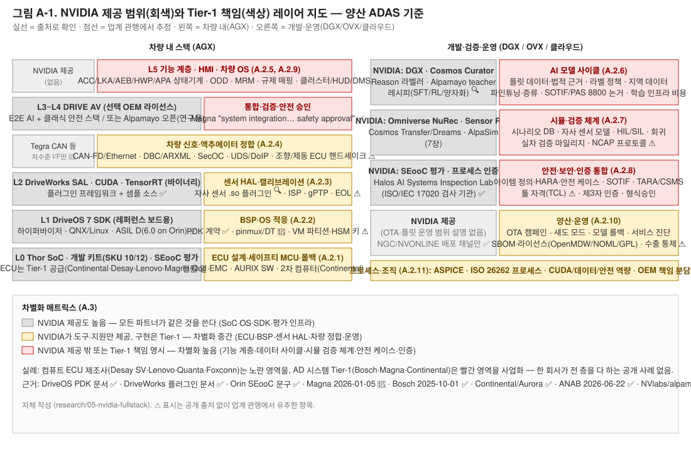

Tier-1이 해야 할 일 — NVIDIA가 주는 것 밖에서
3분 요약
읽기 전에
등급 표기. 사실 문장 끝에 출처 칩과 등급을 붙였다. ✅는 독립된 두 출처가 일치, 🔍는 1차 출처 원문을 직접 읽음, 📄는 검색 요약이나 2차 보도로만 확인, ⚠️는 미확인이거나 추정이다. 이 부록은 성격상 ⚠️가 많다. "NVIDIA가 주는 것"은 출처가 있지만, "우리가 해야 할 것"의 상당수는 NVIDIA 제공 범위 설명에 그 항목이 없다는 사실에서 추론한 것이기 때문이다. 실제 프로그램 경험자와의 대조가 필요하다.
이 문서에 필요한 용어 6개
.so)을 만든다.1. Android 경험에서 출발하기
Android 양산을 해 본 팀이라면 안다. Google은 커널과 프레임워크 소스, HAL 인터페이스, 호환성 테스트를 주지만, 우리 보드의 BSP, 우리 부품의 HAL, 차량 신호를 잇는 VHAL, 양산 HMI, 그리고 인증 통과는 우리가 했다. NVIDIA DRIVE에 이 그림을 겹치면 어디까지가 NVIDIA이고 어디부터가 우리인지가 보인다.
1.1 경계를 정하는 세 가지 사실
- 커스텀 보드는 PDK 별도 계약이다. DriveOS 문서: "PDK(Platform Development Kit)는 비(非)레퍼런스 DRIVE AGX 하드웨어에서 DriveOS를 돌리도록 수정하는 데 쓰이며, NVIDIA와의 별도 계약이 필요하다" DriveOS 6.0.6 Getting Started✅. 즉 NVIDIA는 우리 보드용 BSP를 만들어 주지 않는다.
- NVIDIA 부품은 SEooC로 평가된다. DRIVE Orin SoC는 "SEooC로서 ISO 26262 ASIL D 체계적 요구사항·ASIL B 랜덤 결함 요구사항을 충족하는 것으로 평가"됐다 NVIDIA 블로그Open Robotics 포럼✅. SEooC의 정의상 통합자가 "사용 가정"을 검증하고 아이템 수준 안전 케이스를 만들어야 한다.
- Tier-1들이 실제로 파는 것이 그 공백을 보여준다. Magna는 Thor 위 DRIVE AV 스택에 대해 "시스템 통합, 검증, 밸리데이션, 안전 승인, 배포" 서비스를 판다고 발표했고(2026-01-05) Magna📄, Bosch는 "안전 전문성과 고성능 ECU·ADAS 시스템 노하우로 양산 준비 배포"를 담당한다고 밝혔다(2025-10-01) Bosch✅.
오픈 모델 쪽 경계는 3장에서 봤다. Alpamayo README는 "완전한 주행 스택이 아니며 … 자동차 등급 검증을 거치지 않았고 … 인증된 AV 스택의 대체물이 아니다"라고 쓴다 NVlabs/alpamayo🔍.
1.2 대입표
| Android 계층 | Google이 주는 것 | 양산 시 우리가 했던 일 | NVIDIA 대응 계층 | NVIDIA가 주는 것 | Tier-1이 해야 할 일 |
|---|---|---|---|---|---|
| Linux 커널·BSP | AOSP 커널, 레퍼런스 보드 지원 | 자사 보드 BSP·드라이버 | DriveOS 7 (부트로더·Type-1 하이퍼바이저·QNX/Linux 게스트 VM) DriveOS 7.0.3 소개 📄 | 레퍼런스 보드(Thor 개발 키트 SKU 10/12)용 SDK; 커스텀 보드는 PDK 계약 | ECU 보드 설계·브링업(pinmux·디바이스 트리), 전원·세이프티 MCU 연동, 세큐어부트 키 |
| HAL | HAL 인터페이스 정의 + 레퍼런스 구현 | 벤더 HAL 구현 | DriveWorks SAL (센서 추상화) | SAL 프레임워크와 플러그인 SDK(라이다·레이더·GPS·IMU·CAN) DriveWorks 센서 플러그인 ✅ | 자사·협력사 센서용 .so 플러그인, ISP 튜닝, 캘리브레이션, 시각 동기 |
| Framework(AOSP) | 프레임워크 소스 | 확장 스택·커스터마이즈 | CUDA/TensorRT/NvMedia + DriveWorks 라이브러리(바이너리) | 표준 API(NvMedia·CUDA·TensorRT) 📄, DriveWorks는 "샘플은 소스+바이너리, 라이브러리·툴은 바이너리" 📄 | 미들웨어 선택·스케줄링·메모리/VM 파티션 설계, 결정론적 실행 보장 |
| GMS/Play 번들 | 비공개 앱·서비스(라이선스) | 라이선스 계약·통합 | DRIVE AV 상용 스택(AI E2E + 클래식 안전 스택) / Alpamayo 오픈 가중치 | 선택 OEM에 라이선스(Mercedes CLA 첫 양산) ✅; Alpamayo는 연구용 오픈 모델 🔍 | 기능 계층(ACC·LKA·AEB·HWP 등) 구현·튜닝, 또는 DRIVE AV 위 통합·검증 |
| VHAL(AAOS) | 인터페이스만 | 차량 신호 매핑 | (해당 없음 — DriveOS는 Tegra CAN 등 저수준 인터페이스만 문서화) 📄 | — | CAN-FD/Ethernet 신호 정합, DBC/ARXML, 액추에이터 ECU 연동 |
| HMI 앱 | 샘플 앱 | 양산 HMI | (해당 없음; DRIVE IX는 별도 코크핏 제품) | — | 클러스터/HUD/DMS 연계 ADAS HMI |
| CTS/VTS | 호환성 테스트 스위트 | 인증 통과 | Halos AI Systems Inspection Lab + 부품 SEooC 평가 | ISO/IEC 17020 인정 검사 기관(2026-06-22 ANAB) ✅; DriveOS 6.0 ASIL D(Orin) ✅ | 아이템 수준 안전 케이스, 제3자 인증, 형식승인 |
1.3 Android와 결정적으로 다른 점 세 가지
첫째, 소스 공개 범위. AOSP는 프레임워크까지 소스지만 DriveOS·DriveWorks 핵심은 바이너리이고 DRIVE AV 상용 스택은 계약 기반이다. 오픈된 것은 Alpamayo·AlpaSim·Cosmos 같은 연구·개발 도구다. 문제가 생겼을 때 소스를 열어 고칠 수 없다는 뜻이다.
둘째, 안전 인증 체계. Android에는 없는 ISO 26262·SOTIF·ISO 21434·PAS 8800 축이 추가된다. NVIDIA는 "부품(SEooC) 평가 + 프로세스 인증 + 검사 랩"까지 제공하고, 아이템 수준 인증과 형식승인은 파트너 몫이다.
셋째, 데이터 사이클. Android 앱에는 없는 "데이터 수집→라벨→학습→시뮬 검증→OTA" 루프가 제품의 핵심 경쟁력이 된다. NVIDIA는 도구(DGX·Omniverse·Cosmos·NeMo Curator)를 주지만 데이터·법적 근거·검증 논거는 파트너 몫이다.
2. 11개 계층별 할 일
아래 11개 계층은 차 안의 아래층(하드웨어)에서 위층(기능·HMI)으로, 그 다음 개발·검증·운영 순으로 늘어놓았다. 각 계층의 첫 문장이 "왜 이 일이 남는가"를 말한다.
1. 하드웨어·ECU
NVIDIA는 개발 키트와 SoC를 팔지만 양산 ECU는 만들지 않는다. 양산용 Thor 시스템은 NVIDIA가 아니라 Tier-1이 공급한다.
NVIDIA가 주는 것
- DRIVE AGX Thor 개발 키트: 2025-08-27 발표, 2025년 9월 출하. SKU 10(벤치)·SKU 12(차량 탑재)는 "전원 입력만 다르다" NVIDIA 블로그edge-ai-vision✅. 인터페이스: GMSL2 16채널 + GMSL3 2채널, 10G-T1 이더넷 3포트 📄.
- 양산용 Thor 시스템은 NVIDIA가 아니라 Tier-1(Continental, Desay SV, Lenovo, Magna, Quanta)이 공급 ✅.
- Orin 플랫폼의 세이프티 MCU는 Infineon AURIX TC397 DriveOS 6.0.9 MCU 문서✅. Thor 키트의 MCU 부품 번호는 미확인 ⚠️.
Tier-1이 해야 할 일
- 양산 ECU 설계: 전원 트리·PMIC, 열 설계, EMC·진동, 커넥터, 변형 관리. Desay SV IPU14(Thor-U)·Lenovo AD1(듀얼 Thor)이 실례 Desay SVLenovo✅.
- 세이프티 MCU 소프트웨어: AUTOSAR Classic 기반 워치독·전원 시퀀스·네트워크 관리·진단 게이트웨이. Infineon: "NVIDIA 개발 플랫폼에서 TC397 같은 SMCU가 전원 제어와 결함 처리 조정을 맡는다" Infineon📄.
- 폴백(2차) 컴퓨터: Continental은 Aurora Driver용으로 "주 컴퓨터 고장 시 운행을 넘겨받는 독립적 2차 시스템"을 개발. NVIDIA는 주 컴퓨터(듀얼 Thor + DriveOS)만 공급 Aurora IR✅.
- 공급망: Thor 조달 조건·수량·리드타임은 비공개 ⚠️.
2. BSP·OS 적응
DriveOS SDK는 레퍼런스 보드용이다. 우리 보드에서 돌리려면 PDK 계약을 맺고 NVIDIA의 도구·지원을 받아 브링업을 직접 해야 한다.
NVIDIA가 주는 것
- DriveOS SDK는 레퍼런스 보드 대상. 비레퍼런스 보드는 PDK, "NVIDIA와의 별도 계약 필요" ✅. PDK 프로그램 페이지와 QNX/Linux PDK 패키지 문서 존재 PDK 프로그램📄.
- 커스텀 보드 절차(DriveOS 7.0.3 "Customizing DriveOS for a Different Board"): NVIDIA 하드웨어 앱 지원팀에 최신 pinmux XLS 요청 → 보드별 탭에서 DT 파일 생성 →
drive-foundation/platform-config/.../bct/<BOARD>에 통합 → 기존 pinmux dtsi와 diff DriveOS 7.0.3📄. 즉 브링업은 파트너가 NVIDIA 도구·지원을 받아 수행한다. - 배포 채널: 개발자 프로그램(NGC 프라이빗 레지스트리)과 파트너 포털 NVONLINE(Artifactory) DriveOS 7.0.3 설치✅.
- QNX OS for Safety 8이 Thor 키트에 통합 출하(ISO 26262 ASIL-D·ISO 21434 사전 인증) QNX 보도자료✅.
Tier-1이 해야 할 일
- 보드 브링업(pinmux·디바이스 트리·BPMP 설정·부트 스트랩 GPIO 변형 처리) 📄.
- 하이퍼바이저 파티션·VM 구성(AV VM, 안전 VM, 인포테인먼트 VM 등)과 자원 격리 설계 ⚠️.
- 세큐어부트·HSM 키 프로비저닝, 양산 라인 키 주입 ⚠️.
- 전원 모드(슬립/웨이크)·부팅 시간 최적화 ⚠️.
- LTS·보안 패치 정책: 공개 정보 없음, 파트너 계약 영역으로 추정 ⚠️.
3. 센서 HAL·시각 동기·캘리브레이션
DriveWorks SAL은 Android HAL의 위치에 있다. 레퍼런스 센서 세트(Hyperion)를 그대로 쓰면 NVIDIA 플러그인으로 되지만, 자사 센서를 쓰는 순간 플러그인·ISP 튜닝·캘리브레이션은 우리 일이 된다.
NVIDIA가 주는 것
- DriveWorks SAL과 커스텀 센서 플러그인 프레임워크(라이다·레이더·GPS·IMU·CAN). "장치별 디코더 함수를 구현해
.so로 컴파일" NVIDIA 자료DriveWorks 문서✅. - 실례: OxTS가 DriveWorks 7.03·Thor 전용 GNSS/IMU 플러그인
.so를 GitHub에 배포 OxTS🔍. NVIDIA 공식 DriveWorks 소스는 GitHub에 없음 🔍. - Hyperion 레퍼런스 센서 세트에 맞춘 "공통 레퍼런스 아키텍처 대비 검증된 ECU·센서 스위트"를 파트너(Aeva, Hesai, Omnivision, Arbe, Sony 등)가 공급 eeNews CES 2026📄.
Tier-1이 해야 할 일
- 자사 센서 구성(레퍼런스와 다르면)용 플러그인·드라이버·GMSL 데시리얼라이저 설정, ISP 튜닝(렌즈·이미저별) ⚠️.
- 시각 동기(PTP/gPTP)·타임스탬프 체계, 공장 EOL 캘리브레이션 장비·절차와 온라인 캘리브레이션 ⚠️.
- 센서 장착 공차·세정·열화 감시 ⚠️.
4. 차량 신호·액추에이터 정합
Android의 VHAL에 해당하는 층이 NVIDIA 쪽에는 없다. 조향·제동 ECU와 말을 맞추는 일은 전부 우리 몫이다.
NVIDIA가 주는 것
- DriveOS 시스템 구성 요소로 Tegra CAN 등 저수준 인터페이스가 문서화 DriveOS 5.2 문서📄. AUTOSAR·게이트웨이 통합을 NVIDIA가 제공한다는 언급은 없음 ⚠️.
Tier-1이 해야 할 일
- 차량 OS·E/E 아키텍처 통합: Mercedes는 MB.OS, JLR은 자체 OS를 DRIVE 위·옆에서 운영 JLRMercedes✅. LG는 자사 IVI를 Hyperion과 통합 PR Newswire📄.
- 신호 DB(DBC/ARXML) 정합, SOME/IP·DDS 미들웨어, SecOC, 조향·제동·파워트레인 ECU 인터페이스와 안전 핸드셰이크, UDS/DoIP 진단·DTC ⚠️.
5. AV 기능 계층
DRIVE AV를 라이선스하든 자체 스택을 올리든, "어떤 조건에서 어떤 기능을 켜고 어떻게 넘겨주는가"와 규제 매핑은 남는다. Magna 발표의 요지가 정확히 이것이다.
NVIDIA가 주는 것
- DRIVE AV 상용 스택: "코어 주행용 AI E2E 스택 + Halos 위에 구축된 병렬 클래식 안전 스택(중복성·가드레일)" NVIDIA 블로그AVI✅. 첫 양산은 Mercedes CLA(MB.DRIVE ASSIST PRO) ✅. 상세는 3장.
- Alpamayo 오픈 모델·AlpaSim: "연구·실험·평가 목적", "인증된 AV 스택의 대체물 아님" NVlabs/alpasim🔍.
- Toyota·Hyundai처럼 "Orin/Thor + 안전 인증 DriveOS"만 채택하고 ADAS 앱은 자체 개발하는 경우도 있음 TechCrunch ToyotaHMG 2025-10-31✅. HMG는 2026-03-16 "L2 이상 NVIDIA 자율주행 기술을 일부 모델에 통합"으로 확대 HMG✅.
Tier-1이 해야 할 일 (DRIVE AV를 라이선스하든, 자체 스택을 올리든 공통)
- 기능 정의·상태 기계: ACC·LKA·AEB·TJA·HWP·APA 각 기능의 활성 조건, ODD 관리, 핸드오버·MRM 전략 ⚠️.
- 규제 매핑: UN R79(조향)·R152(AEB)·R157(ALKS)·R155(CSMS)·R156(SUMS), GSR2, Euro NCAP/KNCAP, 중국 GB. NVIDIA는 DRIVE AV에 대해 TÜV Rheinland의 "UNECE 복잡 전자 시스템 안전 평가"를 받았다고 밝혔지만 형식승인 자체는 OEM 몫 NVIDIA 뉴스룸 2025-01📄.
- 지역 튜닝: 한국 표지판·차선·도로 구조·운전 문화, 지역 지도·측위 소스 ⚠️.
- DRIVE AV를 쓰더라도 "시스템 통합·검증·안전 승인·배포"가 남는다는 것이 Magna 발표의 요지 📄.
6. AI 모델 사이클 (3장·7장 직결)
NVIDIA는 세 대의 컴퓨터와 오픈 모델·도구를 준다. 그러나 데이터 자체, 데이터를 모을 법적 근거, 자사 센서·ODD에 맞춘 재학습, 그리고 "이 모델이 안전하다"는 논거는 주지 않는다.
NVIDIA가 주는 것
- "세 대의 컴퓨터": DGX(학습)·Omniverse+Cosmos(시뮬)·DRIVE AGX(차량) NVIDIA 블로그Halos AV 페이지✅. Cosmos 모델·Curator·데이터셋 공개 범위는 7장.
- Alpamayo 계열 오픈 가중치(연구용)와 AlpaSim, Cosmos-RL 등 후처리 도구(3장·7장).
Tier-1이 해야 할 일
- 데이터 확보와 법적 근거: 자사 플릿 수집 체계, 개인정보(GDPR·개인정보보호법) 처리, 데이터 소유권 계약(OEM vs Tier-1) ⚠️.
- 큐레이션·라벨링 운영: Cosmos Curator·Reason 같은 도구를 써도 라벨 정책, 품질 관리, 지역 데이터 보강은 자체 몫 ⚠️(7장 2절).
- 파인튜닝·증류·양자화·온보드 최적화: 오픈 모델을 쓰면 자사 센서 구성·ODD에 맞춘 재학습과 Thor 예산 내 최적화가 필요(3장 2.5절) ⚠️.
- 모델 검증과 AI 안전 논거: SOTIF·PAS 8800 기반 논거 작성. 세계 모델 시뮬 결과를 인증 근거로 쓸 수 있는지는 미정 ⚠️(7장 한계).
- 학습 인프라 비용: DGX 자체 구축 또는 클라우드. HMG는 Blackwell GPU 5만 장 규모 AI 팩토리를 발표 ✅.
7. 시뮬레이션·검증
Omniverse·NuRec·Cosmos·AlpaSim은 도구다. 어떤 시나리오를 얼마나 돌려야 충분한지, 그 기준과 시나리오 자산은 우리가 만든다.
NVIDIA가 주는 것
- Omniverse 기반 AV 시뮬 블루프린트, NuRec 신경 재구성, Cosmos 세계 모델, AlpaSim(7장·3장 시뮬 연계).
Tier-1이 해야 할 일
- 시나리오 DB(OpenSCENARIO 등)·ODD 커버리지 정의, 자사 센서 모델(레퍼런스 외 센서), HIL/SIL 환경, 회귀 테스트 체계 ⚠️.
- 실차 검증 마일리지·기준(NCAP 프로토콜, 규제 시험) ⚠️.
- Magna·Bosch가 "밸리데이션"을 서비스로 파는 것 자체가 NVIDIA 도구만으로 완결되지 않음을 시사 ✅.
8. 안전·보안·인증 통합
NVIDIA는 부품 평가와 검사 랩까지 준다. 그러나 검사 랩은 "인증에 대비시키는" 기관이지 인증 기관이 아니고, 아이템 수준 안전 케이스와 형식승인은 우리 몫이다.
NVIDIA가 주는 것
- 부품 평가: Orin SoC SEooC(ASIL D 체계적/ASIL B 랜덤), DriveOS 6.0 ASIL D(Orin 기준; 2025-01 "인증 릴리스 대기" → 이후 "인증"), Thor-X SoC "ASIL D 평가", ISO 21434 프로세스 인증(TÜV SÜD) eeNewsHalos AV✅. DriveOS 7/Thor의 인증 상태는 미확인 ⚠️(2장 담당).
- Halos AI Systems Inspection Lab: ISO/IEC 17020 인정(ANAB, 2026-06-22), 범위 ISO 26262·21448·21434·PAS 8800·TR 5469. "파트너의 Halos 통합을 TÜV Rheinland·UL·TÜV SÜD·exida·SGS·CertX 등 제3자 인증에 대비시키는" 검사 기관이지 인증 기관이 아님 ANAB✅. 랩 자체는 CES 2025 출범 NVIDIA 블로그📄.
Tier-1이 해야 할 일
- 아이템 정의·HARA·기능/기술 안전 개념·안전 케이스(ISO 26262 Part 3~4), SEooC 사용 가정 검증. Intertek: "안전 매뉴얼은 OEM이 SEooC를 어떻게 통합·구성·시험·검증해야 하는지 설명하는 권위 문서" Intertek📄. NVIDIA 안전 매뉴얼 원문은 NVONLINE 게이트 뒤로 추정 ⚠️.
- SOTIF(ISO 21448) 분석, PAS 8800 AI 안전 논거, TARA·CSMS(R155)·SUMS(R156), 툴 자격(TensorRT·CUDA 등 TCL). 툴 자격 관련 NVIDIA 공개 자료는 찾지 못함 ⚠️.
- 형식승인 절차(KATRI 등 지역 기관) ⚠️.
9. HMI·UX
DRIVE AV 범위에 ADAS HMI는 없다. 운전자에게 상태를 알리고 개입을 요구하는 방식은 OEM 브랜드 영역이자 NCAP 평가 대상이다.
NVIDIA가 주는 것
- DRIVE AV 범위에 ADAS HMI는 포함되지 않음(코크핏은 DRIVE IX 별도 제품, 3장 범위 밖) ⚠️.
Tier-1이 해야 할 일
- 클러스터·HUD·센터 디스플레이의 ADAS 상태 표시, 경고 전략, DMS 기반 운전자 개입 관리, 음향 ⚠️. Mercedes CLA의 Euro NCAP 5성은 HMI를 포함한 차량 수준 평가 NVIDIA 블로그📄.
10. 양산·운영
OTA·플릿 모니터링·서비스 진단은 NVIDIA 제공 범위 설명에 나타나지 않는다. 라이선스 컴플라이언스와 수익 구조도 우리가 정의해야 한다.
NVIDIA가 주는 것
- OTA 클라이언트·캠페인, 플릿 모니터링·섀도 모드, 모델 버전·롤백, 서비스 툴·A/S 진단, 부품번호·SW 구성관리는 NVIDIA 제공 범위 설명에 나타나지 않음 ⚠️. Mercedes·Uber 등이 고객 대면 서비스를 소유 📄.
Tier-1이 해야 할 일
- 위 항목 전부.
- SBOM·라이선스 컴플라이언스: Alpamayo 코드 Apache-2.0·가중치 OpenMDW-1.1 🔍, Cosmos는 세대별 NOML/OpenMDW(7장), DriveOS 내 Linux/GPL 구성 요소, 수출 통제 검토 ⚠️.
- 비즈니스 모델: Mercedes 2020 계약은 "미래 기능 구매·구독의 반복 수익을 양사가 공유"하는 구조로 알려졌고 조건은 비공개 NVIDIA 뉴스룸 2020TechCrunch 2020✅. Tier-1은 OEM–NVIDIA 수익 공유 구조 안에서 자기 몫을 정의해야 함 ⚠️.
11. 프로세스·조직
NVIDIA의 프로세스 인증은 NVIDIA 것이다. 우리 조직의 ASPICE·ISO 26262 프로세스와 CUDA·데이터·시뮬·안전 역량은 따로 갖춰야 한다.
NVIDIA가 주는 것
- NVIDIA 파트너 채널: DRIVE 개발자 프로그램(NGC)과 NVONLINE 파트너 포털, 하드웨어 앱 지원, 커스터머 서포트 엔지니어 ✅. NRE·유닛 라이선스 구조는 비공개 ⚠️. NVIDIA 프로세스 인증(TÜV SÜD)은 NVIDIA 것이다.
Tier-1이 해야 할 일
- ASPICE·ISO 26262 프로세스는 Tier-1 자체 프로세스가 필요 ⚠️.
- 사내 역량: CUDA/TensorRT 최적화, 데이터 엔지니어링, 시뮬 엔지니어링, 안전·보안 엔지니어링. Bosch 발표의 역할 분담("NVIDIA는 AI 스택, Bosch는 통합·검증·도메인 지식")이 조직 설계의 참고 ✅.
- OEM과의 책임 분담: MB.DRIVE는 "Mercedes와 NVIDIA가 파트너십으로 개발"이라고만 공개되어 엔지니어 분담은 비공개 ⚠️.
3. 어디서 차별화가 생기나
두 축으로 보면 답이 나온다. 하나는 NVIDIA가 얼마나 채워 주는가(제공도), 다른 하나는 양산에 얼마나 필수인가다. 모두 필수이지만 제공도는 크게 다르다. 제공도가 낮고 필수인 곳, 즉 기능 계층·데이터 사이클·검증 체계·안전 케이스가 Tier-1이 파는 것이 된다.

| 영역 | NVIDIA 제공도 | 양산 필수도 | Tier-1 차별화 가능성 | 비고 |
|---|---|---|---|---|
| SoC·레퍼런스 보드·OS | 높음 | 필수 | 낮음 | 모두 같은 Thor·DriveOS를 쓴다 |
| ECU 설계·브링업·세이프티 MCU | 중간(도구·지원) | 필수 | 중간 | 원가·열·신뢰성에서 차이 |
| 센서 HAL·캘리브레이션 | 중간(SAL 프레임워크) | 필수 | 중간 | 자사 센서 구성 시 필수 |
| 차량 신호·액추에이터 정합 | 낮음 | 필수 | 중간 | OEM E/E별 반복 작업 |
| AV 기능 계층·ODD·규제 매핑 | 중간(DRIVE AV 라이선스 시)~낮음 | 필수 | 높음 | 지역·OEM 특화가 제품 가치 |
| 데이터 사이클·AI 안전 논거 | 중간(도구) | 필수 | 높음 | 데이터와 논거는 대체 불가 |
| 시뮬·검증 체계 | 중간(Omniverse/Cosmos) | 필수 | 높음 | 시나리오·기준이 자산 |
| 안전 케이스·인증·형식승인 | 중간(SEooC·검사랩) | 필수 | 높음 | Magna가 "안전 승인"을 서비스로 파는 이유 |
| HMI·UX | 없음 | 필수 | 중간 | OEM 브랜드 영역 |
| OTA·운영 | 없음 | 필수 | 중간 | 수익 공유 구조와 연결 |
4. 실제 Tier-1은 무엇을 하나
| 회사 | NVIDIA 위에서 만드는 것(공개) | 출처 |
|---|---|---|
| Bosch | Thor를 자사 컴퓨트·ECU 아키텍처에 통합, "안전 전문성·고성능 ECU·ADAS 노하우로 양산 배포", 통합·검증·도메인 지식 | Bosch 2025-10-01 ✅ |
| Magna | Hyperion 호환 ECU, DRIVE AV 스택 "시스템 통합·검증·밸리데이션·안전 승인·배포", L2++/L3/L4 런칭 서비스. 2025-03에는 Thor 통합 프로그램(데모 Q4 2025, L2~L4) | Magna 2026-01-05 📄 |
| Continental | Aurora Driver 하드웨어 양산화 + 독립 2차(폴백) 시스템, 2027 양산. Thor 양산 시스템 공급사 목록에도 포함 | Aurora IR ✅ |
| Desay SV | IPU03(Xavier, XPeng P7) → IPU04(Orin, "Li Auto·Xpeng·GAC·Great Wall·Nissan 등 20개 이상 OEM") → IPU14(Thor-U, "원칩 콕핏·주행 통합, L3, 일부 L4", GAC Hyptec L4 2025 양산). 2020년부터 NVIDIA 협업 | Desay SV ✅ |
| Lenovo | 듀얼 Thor L4 도메인 컨트롤러 AD1, WeRide GXR 로보택시 탑재("100% 자동차 등급 HPC 3.0"), Nuro·SWM 협업 | Lenovo ✅ |
| Quanta · Foxconn | Quanta: Thor 양산 시스템 공급사(2025-08), CES 2026 Hyperion 생태계. Foxconn: "Orin 기반 ECU의 Tier-1 제조사, Thor ECU도 제조 예정"(2023-10), Stellantis 로보택시 하드웨어 통합 | NVIDIA 블로그 ✅ |
| ZF | ProAI 슈퍼컴퓨터 플랫폼(NVIDIA 옵션), 2019 DRIVE AutoPilot "선호 파트너", CES 2026 Hyperion Tier-1 목록. Thor 기반 OEM 프로그램은 미확인 | eeNews CES 2026 📄 ⚠️ |
| LG전자·LG이노텍 | 자사 IVI를 Hyperion(듀얼 Thor)과 통합, 통신 모듈·센싱·램프. IVI/ADAS 통합 컨트롤러는 aiMotive와 개발 | PR Newswire 📄 |
| Hyundai Mobis · HL Klemove · Aptiv · Valeo · Pegatron · Wistron · Flex | NVIDIA DRIVE 특화 프로그램 공개 자료를 찾지 못함(부재 ≠ 없음). Sony Honda Mobility AFEELA는 Qualcomm 기반 | ⚠️ |
해석. 컴퓨트 ECU 제조사(Desay SV·Lenovo·Quanta·Foxconn)는 1~3층(하드웨어·BSP·센서)을, AD 시스템 Tier-1(Bosch·Magna·Continental)은 4~8층(차량 정합·기능·데이터·검증·안전 승인)을 사업화하고 있다. 한 회사가 전 층을 다 하는 사례는 공개 자료에서 확인되지 않는다. CES 2026 Hyperion 생태계 명단은 "Bosch, Magna, ZF 등 Tier-1·통합사와 Aeva, AUMOVIO, Astemo, Arbe, Hesai, Omnivision, Quanta, Sony"이며, 이점은 "OEM이 공통 레퍼런스 아키텍처 대비 검증된 ECU·센서 스위트를 조달할 수 있다"는 것이다 📄.
5. 세 가지 결론과 다음 과제
3장·7장·부록 A를 합쳐 세 문장으로 줄이면 아래와 같다.
다음 조사 과제
- 원문 재확인. 이번 세션에서 검색 요약(📄)에 의존한 NVIDIA 뉴스룸·블로그·논문 인용을 원문으로 확인한다. 특히 CLA 탑재 칩, Alpamayo 파생 모델의 CLA 포함 여부, Cosmos 3 파라미터 해석, Drive-Dreams의 정량 효과.
- 2장과의 접합. DriveOS 7/Thor 인증 상태, Halos 3계층과 3장의 런타임 안전 구조를 맞춘다.
- 5장과의 접합. DriveOS LLM SDK·TensorRT와 Alpamayo student 모델의 온보드 경로, Cosmos 3 NIM 배포를 맞춘다.
- Tier-1 실무 검증. 이 부록의 ⚠️ 항목(하이퍼바이저 파티션, HSM, gPTP, EOL, SecOC, 툴 자격 등)을 실제 프로그램 경험자와 대조한다.
6. 아직 확인 못 한 것
| 항목 | 상태 | 확인 방법 |
|---|---|---|
| Thor 개발 키트 세이프티 MCU 부품 번호 | ⚠️ | Thor Hardware Quick Start Guide PDF |
| DriveOS 7 / Thor의 ISO 26262 인증 상태 | ⚠️ | 2장 담당·Halos 페이지 갱신일 |
| DriveOS LTS·패치 정책 | ⚠️ | NVONLINE 파트너 문서 |
| NVIDIA 안전 매뉴얼의 파트너 책임 문구 | ⚠️ | NVONLINE 안전 매뉴얼 |
| TensorRT/CUDA 툴 자격(TCL) | ⚠️ | NVIDIA 안전 보고서·TÜV 범위 |
| Mercedes 수익 공유 비율·NRE | 비공개 ⚠️ | — |
| Toyota가 DRIVE AV를 쓰는지 | ⚠️ | 후속 발표 |
| DriveOS 6.0 ASIL D "대기" vs "인증" 시점 | 출처 상충 | Halos 페이지 날짜 확인 |
| 형식승인에서 TÜV Rheinland UNECE 평가의 정확한 범위(R157 등) | ⚠️ | 원문 보도자료 |
| 디자인 윈 파이프라인 최신 수치(2022 $11B → 2023 $14B 이후 없음; Q2 FY27 "자동차 수직 시장 $8B TTM"은 데이터센터 매출 혼합) | ⚠️ | NVIDIA IR |
출처
본문의 인용은 모두 둥근 칩으로 링크되어 있다. 통합 목록(128건, 유형·날짜·확인 사실·등급)은 reference/references.md, 그림 출처는 reference/images.md, 이 부록의 사실 목록 원본은 appendix-a-tier1-workscope.md에 있다. 가장 많이 기댄 출처는 DriveOS PDK 문구 ✅, 커스텀 보드 절차 📄, Orin SEooC ✅, ANAB 검사랩 인정 ✅, Magna 2026-01 📄, Bosch 2025-10 ✅, Aurora·Continental ✅, Desay SV ✅다.
작성일 2026-09-02 · 브랜치 claude/nvidia-fullstack-research-outline-ouyd5t · 함께 읽기: 3장 자율주행 스택 · 7장 Physical AI / Cosmos